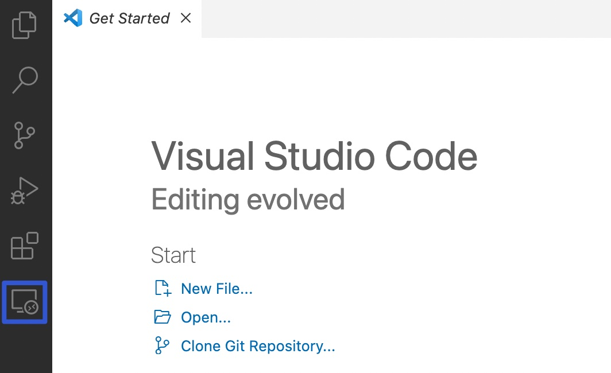
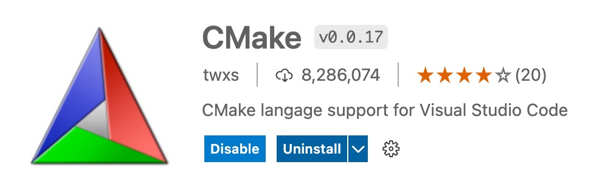

VS Code 插件 Remote SSH¶
 Bilibili视频传送门： 远程开发C++001_Remote SSH
Bilibili视频传送门： 远程开发C++001_Remote SSH
在学习过如何使用 SSH 登录 GitHub 后 GitHub SSH 免密码登录，我们对 SSH 已经有了基础的了解，比如像腾讯云和阿里云这样租用的服务器，我们都是可以通过 SSH 去登录。
远程开发 C++ 这一系列内容将向大家展示如何通过 SSH 登录一个服务器。
首先，这期主要向大家介绍一款非常好用的 VS Code 插件: Remote SSH ，它可以让我们在远程服务器开发像在本地开发一样简单。
登录远程服务器¶
SSH 的使用较简单，如果已经在远程服务器上配置了密钥，那就可以直接通过 SSH 去登陆远程服务器：
在控制台输入 ssh remote-21-ttlarva （remote-21-ttlarva 需改成所需要使用的 Host 名）。
在登上远程服务器之后，我们就来到了 Linux 系统下，并且可以使用 Linux 命令，例如 ls 和 man ssh。不过只有一个命令行是不够方便的，如果我们不熟悉 Vim 这一类软件，并且喜欢用键盘加鼠标的组合，那么就需要 VS Code 的一个神奇插件了：Remote SSH。
Remote SSH 插件底层是通过 SSH 协议的，并且做了非常多贴心的开发和优化。这使得我们在安装好这个插件并配置好 SSH 登录选项后就可以直接打开远程服务器上的目录，就像在本地操作一样。更强大的是，VS Code 有了这个插件后，VS Code 的其他插件都可以直接安装在远程服务器上，换言之，这就让远程的开发更接近本地开发了。
安装 Remote SSH¶
安装较为简单，和其他插件安装方式相同：

安装完成之后，会发现左下角多了一个按钮：

点击它，然后选择 Open Configuration File：

打开我们配置文件，就是 .ssh/config
Host oneflow-15-ttlarva-remote
HostName 182.18.94.166
Port 1615
User ttlarva
IdentityFile E:\oneflow_ssh\id_rsa
Host remote-21-ttlarva
HostName 192.168.1.41
Port 20021
User ttlarva
IdentityFile E:\oneflow_ssh\id_rsa
ProxyCommand C:\Windows\System32\OpenSSH\ssh.exe -q -x -w %h:%p oneflow-15-ttlarva-remote
StrictHostKeyChecking no
当安装好这个插件之后，我们还会发现左边多了一个电脑一样的图标：

我们可以点击 Connect to Host in Current Window 在当前的窗口：

等到左下角不转圈时，就说明我们已经连接好了。我们打开一个终端试试，如果可以敲下 Linux 下的命令了，这就说明已经在远程服务器上了。
接着我们还可以使用 VS Code 去打开远程服务器上的文件夹目录，点击目录：Open Folder。

看到你需要的这个文件夹就是在远程服务器上的，打开它，点击 ok。这样我们就打开了一个远程服务器上的一个你需要的仓库。
在远程服务器上安装插件¶
在已经有 Remote SSH 能登录到远程服务器的基础上，我们可以在远程服务器上安装 VS Code 插件。
一开始打开一个 CMake 的文件，是没有高亮的，这是因为没有插件对它做语法解析。
如果我们现在想让他高亮起来，就需要安装插件：打开插件安装按钮，搜索 CMake。

看到 Install in SSH:remote 这个按钮，是提示我们可以安装在远程服务器上，点击它后，再回过来看我们的 CMake 文件，就已经高亮了。
当我们点击到插件安装栏，会发现它有帮我们展示出 Local 本地安装了哪些插件，远程服务器上安装了哪些插件，如果大家有发现在本地非常好用的插件，那么就可以安装到远程服务器上。点击 install in SSH:remote，就可以在远程服务器上使用了。
在我们给 VS Code 安装了 Remote SSH 插件后，我们可以让在远程服务器开发像在本地开发一样简单，也让远程服务器可以支持安装一系列的插件。